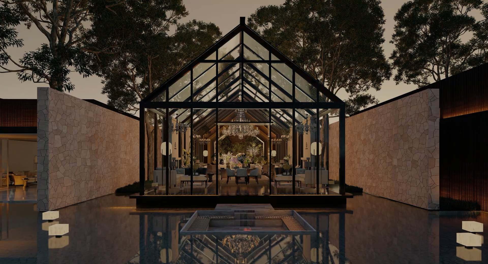
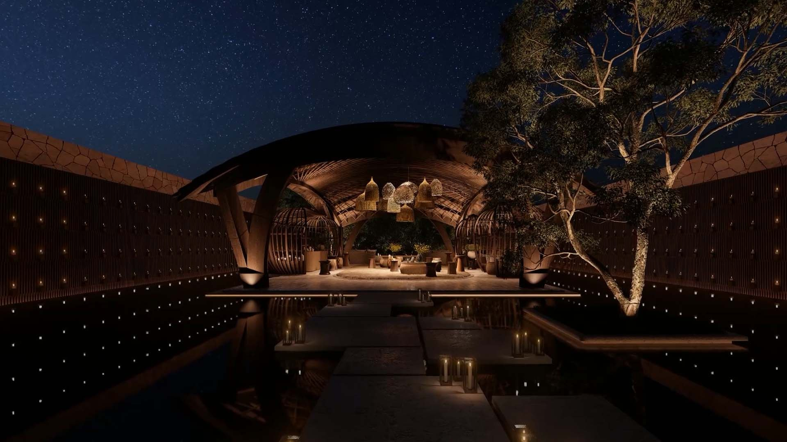
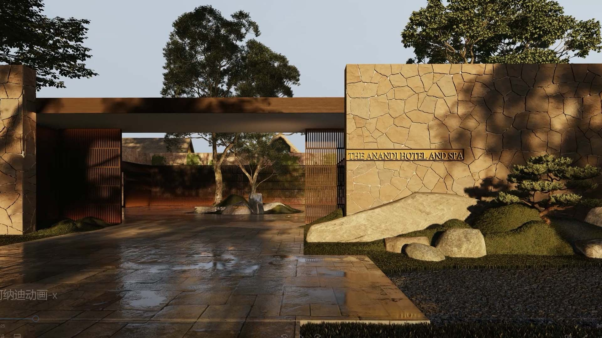
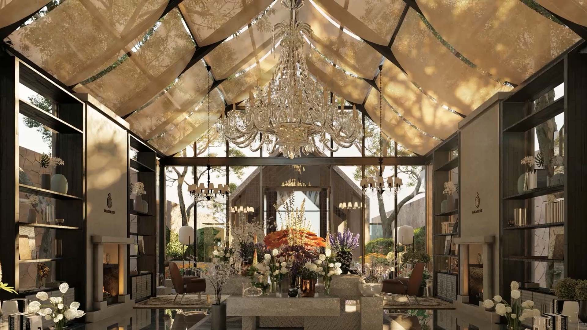
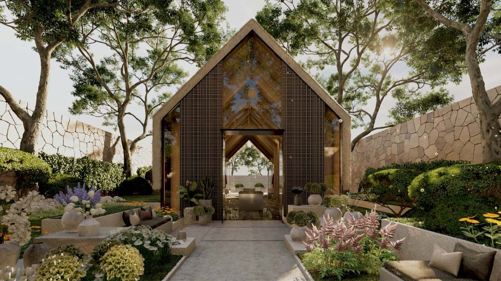
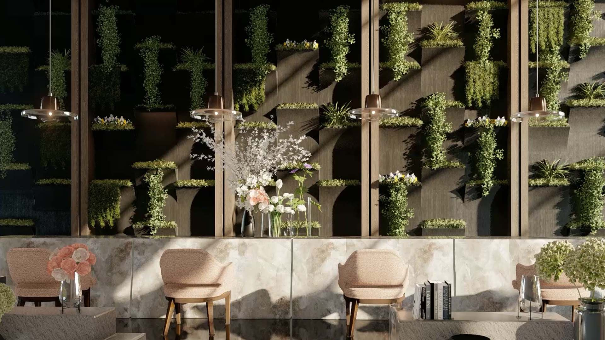
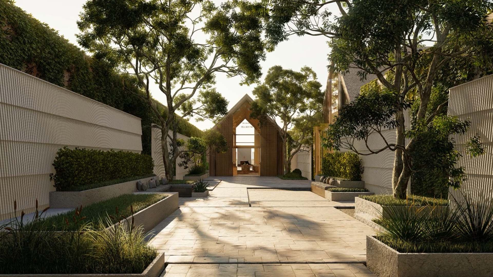
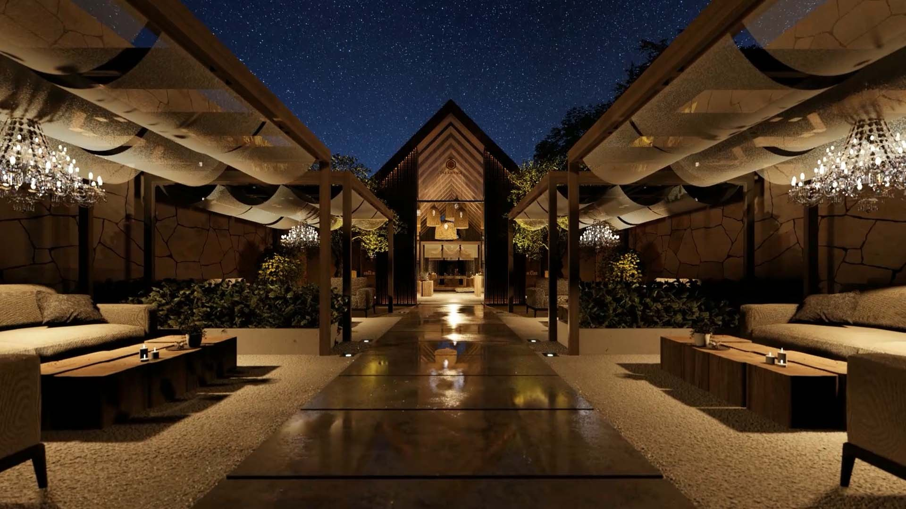

Anji, Zhejiang
The Anandi Anji
H2 project archive · 2020
S&N Group Introduction
All work
The hotel design maximizes the use of landscape resources, deploys functions along the landscape, and creates powerful and different user experience zones around different courtyards, creating a private and relaxing recuperation and leisure environment for guests. territory. The architecture returns to nature, simple and relaxed. Feel the joy of Anadi’s vacation and healing lifestyle, and experience the beauty of the architectural space that returns to nature.














- Location
- Anji, Zhejiang
- Year in source archive
- 2020
- Hotel group in archive
- S&N Group Introduction
The year is the year stated in the original archive, not a verified completion date. The source may include design-stage imagery. Current naming, status, precise scope and image credits require confirmation before official publication.